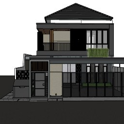
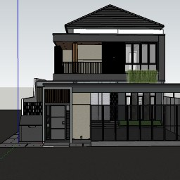
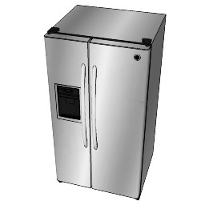

3D Modeling_Rumah Mba Alfi_V2.skp
File SketchUp 2023 (31 MB) disertakan di folder models/, plus versi glTF-nya (models/rumah.glb, dikompres dari 96 MB → 4,3 MB) yang dimuat langsung ke tampilan 3D. Tekan G untuk beralih antara model SKP asli dan model blok. Preview yang tertanam di file .skp:



⬇ Download .skp
⬇ Download .glb asli (96 MB)
Memperbarui model
Kalau ada revisi SKP: export ulang ke .glb, lalu jalankan python3 scripts/fixmodel.py in.glb /tmp/g.glb && npx @gltf-transform/cli optimize /tmp/g.glb models/rumah.glb --compress meshopt --texture-compress webp --texture-size 1024 --palette false --simplify false. Posisi/skala bisa dikoreksi di tab Setelan.
Status: mengecek models/rumah.glb…
Setelan hitungan
Sumber ukuran
Semua dimensi dari DED Antasena Karya Project (denah rencana hal. 42–43, denah penutup lantai hal. 54–55, tampak hal. 44). Grid as tembok, tebal tembok 15 cm, ukuran bersih = grid − 15 cm. Angka tukang (foto buku + chat) dipakai sebagai pembanding.